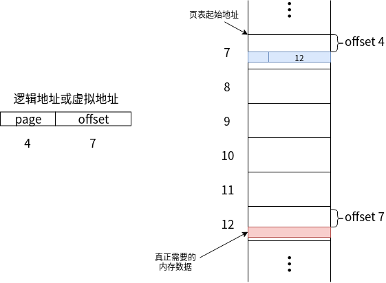

Linux系统编程:进程_虚拟内存
引用一下wiki上的话：
虚拟内存 是计算机内存管理的一种技术。它使得应用程序认为它拥有连续可用的内存（一个连续完整的地址空间），而实际上，它通常是被分隔成多个物理内存碎片，还有部分暂时存储在外部磁盘存储器上，在需要时进行数据交换。与没有使用虚拟内存技术的系统相比，使用这种技术的系统使得大型程序的编写变得更容易，对真正的物理内存（例如RAM）的使用也更有效率。
注意：虚拟内存不只是“用磁盘空间来扩展物理内存”的意思 ——这只是扩充内存级别以使其包含硬盘驱动器而已。把内存扩展到磁盘只是使用虚拟内存技术的一个结果，它的作用也可以通过覆盖或者把处于不活动状态的程序以及它们的数据全部交换到磁盘上等方式来实现。对虚拟内存的定义是基于对地址空间的重定义的，即 把地址空间定义为“连续的虚拟内存地址”，以借此“欺骗”程序，使它们以为自己正在使用一大块的“连续”地址。
虚拟内存 还有个重要的意义在于，保护了进程不被其他进程影响。在没有虚拟内存的时候，每个进程都可以操作物理内存的内容，而没有限制，这会导致恶意程序很容易的查看和修改其他程序的内存内容，带来危险。
虚拟内存和swap交换分区的区别
swap交换空间 在大多数时候也被称为 虚拟内存，但和真实的虚拟内存是完全不一样的概念。
交换空间 是 对物理内存的一种扩容，在Linux下，当物理内存使用到一定程度时，才会使用swap空间。但 虚拟内存 是程序一开始启动时就已经使用的了。
虽然 交换空间 最终也是将物理内存中的内容保存在硬盘上，但是 进程所使用的虚拟内存是以进程为基本单位，是为了让进程感觉，就是自己在使用一大块地址。
交换空间 的文件保存在用户设置的一个文件路径下，而 虚拟内存 则存在于 /proc/{pid}/ 中。前者由用户控制，后者由操作系统控制。
虚拟空间发展历史
早期的内存空间没有 虚拟内存 这个概念，大家都使用的是真实的物理内存，这种方式在当时也是能够胜任很多工作的。但是，随着多任务处理和多道程序的普及，这种方式便慢慢变得落后了。
虚拟内存 的概念最早由德国的物理学家 Fritz-Rudolf Güntsch 于1956年在 Technische Universität Berlin 在他的博士论文(Logical Design of a Digital Computer with Multiple Asynchronous Rotating Drums and Automatic High Speed Memory Operation)中提出。
在1961年，Burroughs公司独立发布了第一台带虚拟内存的商用计算机，B5000，具有分段而不是分页。
虚拟内存 的出现，极大的简化了程序员开发程序的难度。它规范了程序的内存地址空间，将物理内存的管理抛给了操作系统，程序只需关心属于自己的那份虚拟内存即可。
寻址
当今的计算机都采用的是 冯·诺伊曼体系架构，工作原理都是 读取数据交由CPU进行处理。
数据的读取顺序 由近及远 分别是：寄存器 -> L1/L2/L3/...缓存 -> 物理内存 -> 磁盘。
CPU通过寄存器中保留的地址进行数据的读取，如果数据存在于 L1/L2/L3/...缓存 中，则直接使用。如果没有命中，则需要在内存中查找。
计算机的寻址方式很多，直接寻址、相对寻址、变址寻址等等。归根结底，是将寻址的过程分成了多个步骤，最终仍是通过 虚拟内存 -> 物理内存 -> 磁盘 找到数据进行处理。
操作系统将虚拟内存按一定的大小分割成固定的块，作为磁盘和物理内存之间的传输单位，这个块被成为虚拟页(Virtual Page, VP)，物理内存也会按照同样的大小分割成物理页(Physical Pagee, PP)。
分页寻址
在没有虚拟内存的情况下，进程在物理内存中的空间使用如下图所示：
进程直接使用的是物理内存空间。
在使用虚拟内存的情况下，进程实际的空间使用是保存在硬盘上的，物理内存只是保留了 进程当前时间所需的数据。
如上图所示，页表中保存了 进程数据存在于物理内存中的偏移量，进程数据部分存在于物理内存中，部分存在于硬盘中。当物理内存未命中时，才将硬盘中的数据加载到物理内存中，同时刷新页表。

如上图所示，是根据虚拟地址进行查找的过程。
- 虚拟地址需要选取页表偏移为4的页。
- 对应于物理内存中的7号块，再偏移4个单位。
- 得到的结果为12，表示数据存在于物理内存中的12号块中。
- 再通过虚拟地址中的offset字段，选择12号块中偏移7个单位的内容，即是需要查找的进程数据。
PS:真实的场景远比上述内容复杂，会出现多级页表的情况，这种情况下，只要记住最后一步操作之前的页表查找，都是过程，最后一步才真正的命中数据。
分段寻址
在Linux中，一个程序或者一个动态库，都是ELF格式的文件。他们的特点呢，都是含有很多个 段(segment)，不同的 段 中包含了不同的内容，在内存中充当不同的角色。比如最常见的 数据段和代码段。
可以看到每段都有对应的 Address字段、Off字段、Size字段。Off字段 表示的是该段在虚拟内存中的偏移，Elf文件中的偏移地址都是以 000000...00000 为基址的，所以 Address字段 的内容为此。在真实加载时，基址会发生改变。
如上图所示，在没有虚拟内存的情况下，通过 逻辑地址的段号以及段内偏移，通过段表来查找对应的物理内存中的位置
和页表的处理方式类似，只不过将大小一致的块换成了大小不同的段。
在虚拟内存中使用段表寻址时
- 首先找到逻辑地址中的段号，根据段号中的信息，找到对应的位置
- 如果逻辑地址中的偏移值小于段长度，则算出具体的位置，获取该值。
- 如果逻辑地址中的偏移值大于段长度，则会产生异常 段错误。
段页寻址
段页寻址 是将段表和页表结合起来的一种寻址方式。
- 首先根据虚拟地址，找到对应的段。
- 在段表的起始地址处，根据段表偏移找到对应的段。如上图中段号为3,对应的段表内容为 0x00850000: 10000h。
- 然后根据 段基址 和 段偏移 找到对应的页表。
- 上图中，页内容对应的位置为 0x00860000。
- 找到对应的页表项，上图中页命中，并指向页号为4的页。
- 找到页号为4的页，根据 虚拟地址中最后的偏移，找到对应的数据。
关于内存分配的系统调用以及c库函数
堆上的内存分配
系统调用
主要的系统调用有两个 brk() 和 sbrk()。
#include <unistd.h>
int brk(void *addr);
void *sbrk(intptr_t increment);
这两个系统调用目的都是改变 program break 的位置：
- brk - 改变的是 program break 的位置到制定的 addr 位置。
- sbrk - 在原有的 program break 的位置的基础之上添加传入的 increment 大小，返回的值为 上一次program break 的位置，也就是新分配部分开始的位置。
c库函数
大多数时候，都使用的是c库函数进行内存分配，包括：malloc、free、calloc、realloc。
#include <stdlib.h>
void *malloc(size_t size);
void *calloc(size_t nitems, size_t size);
void *realloc(void *ptr, size_t size);
void free(void *ptr);
- malloc - 在堆上分配指定参数size大小的内存，不初始化内存的内容。返回值为新空间的起始地址。
- calloc - 第一个参数 nitems 表示要分配的元素的个数，size 表示单个元素的大小。所分配的空间大小为
nitems * size。并且将分配的内存初始化为零。返回值为新空间的起始地址。 - realloc - 重新设置指定堆内存的大小，ptr 表示的是需要重新分配的堆的起始地址，size 表示的是重新分配后的大小。返回值为新空间的起始地址。
- realloc 分配堆内存时，如果size大小大于之前的堆大小，则不会对额外分配的字节进行初始化。但如果是小于，则会对缩小部分进行初始化。
- 当增大内存时，realloc 会试图去合并在空闲列表中紧随其后的且大小满足要求的内存块。
- 如果原内存块位于堆顶，那么 realloc 会对堆空间进行扩展。
- 如果原内存块位于堆中，并且内存块的大小不足，那么 realloc 会分配一块新的内存，并将原有的内存数据拷贝到新的内存块中。
- free - 释放 ptr参数 指向的内存块空间。
- 函数的调用并不会降低 program break 的位置，而是将该块内存添加到空闲内存列表中，供后续的内存分配函数继续使用。
- 在调用 free() 后对参数 ptr 的任何使用，将产生错误。最典型的 double free～
malloc() 和 free() 的实现
- malloc 在分配内存时，会首先扫描之前由 free 所释放的空闲内存块列表，以求 找到尺寸大于或相等的一块空闲内存。如果内存相等，则直接返回给调用者。如果大于，则对该内存块进行分割，相等的部分返回给调用者，剩下的部分保留在空闲列表中。
- 如果空闲列表中找不到足够大的内存块，则 malloc 会使用 系统调用sbrk 分配 超过所需内存大小(通常为数倍)的空间 来增加 program break。
- 在 malloc 分配内存块时，会额外分配几个字节来存放记录这块内存大小的整数值。
当内存块置于空闲内存列表(双向链表)中时，free 会 使用内存块本身的空间来存放链表指针。如下图所示：
随着内存的不断分配和释放，空闲列表会和已分配的内存空间混杂在一起。如下图所示：
栈上的内存分配
使用 alloca() 函数，可以在栈上对内存进行分配。
#include <alloca.h>
void *alloca(size_t size);
和堆上使用 malloc 分配内存一样，size 参数表示分配内存的大小，返回值为新的内存起始位置。
与堆上内存分配不同的地方在于：
- 不能使用 free() 来释放 alloca() 分配的内存！
- 不能使用 realloc() 来调整 alloca() 分配的内存！
- alloca() 分配的速度要快于 malloc()。
- 编译器将 alloca() 作为内联代码处理，并通过直接调整堆栈指针的方式来实现。此外，alloca() 也不需要维护空闲内存块列表。
- alloca() 分配的 内存随栈帧的移动而自动释放，即当函数返回时。
总结
程序在运行时，有个典型的特征，访问局部性：
- 空间局部性(Spatial locality): 程序倾向于访问在最近访问过的内存地址附近的内存。程序的指令是按顺序执行的，指令存放的位置变化不大，数据结构也类似。
- 时间局部性(Temporal locality): 程序倾向于在不久的将来再次访问最近刚访问过的内存地址。
由于上述的访问局部性原则，使得即使只有部分的地址空间存在于物理内存中，程序仍然可以运行。
虚拟内存管理带来的好处：
- 进程与进程、进程与内核之间相互隔离，一个进程不能修改另一个进程或者内核的内存。每个进程的页表条目指向 物理内存中不同的物理页集合。
- 多个进程之间能够实现内存共享，是因为内核将不同进程的页表条目指向了相同的物理页。
- 执行同一程序的多个进程，可共享一份(只读的)程序代码副本。最好的例子是动态库的加载。
- 进程使用 shmget() 和 mmap() 系统调用，显式的请求与其他进程共享内存，常用于进程间通信。
- 便于实现内存保护机制，不同的进程可以对自己的页表项进行标记，可读、可写、可执行。多个进程共享物理内存时，可以进行不同的操作。
- 降低了编程的复杂性，程序员和编译器、链接器之类的工具，不必关心程序在物理内存的物理布局。
- 加速了程序的启动和运行，因为只有部分驻留在物理内存中。